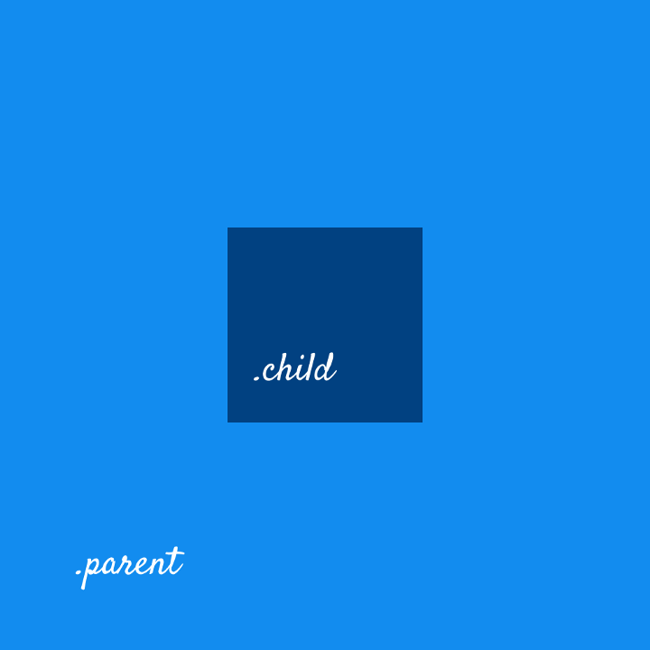

Honestly, we all struggle with CSS and try to find our peace with it. We’ve all found ourselves frustrated with centering things in CSS. Allow me to quickly tell you 5 ways by which you can center a div vertically and horizontally --
We have 2 divs parent and child and we need to center child with respect to the parent.
<div class="parent">
<div class="child"></div>
</div>

How it should look
The Flexible Box Layout Model (flexbox) is a layout model designed for one-dimensional content. It excels at taking a bunch of items which have different sizes, and returning the best layout for those items.
This is the ideal layout model for this sidebar pattern. Flexbox not only helps lay the sidebar and content out inline, but where there's not enough space remaining, the sidebar will break onto a new line. Instead of setting rigid dimensions for the browser to follow, with flexbox, you can instead provide flexible boundaries to hint how the content could display.
The Flexible Box Layout Module, makes it easier to design flexible responsive layout structure without using float or positioning.
Applying following properties to .parent will center .child horizontally and vertically.
.parent {
display: flex;
justify-content: center;
align-items: center;
}
The position property specifies the type of positioning method used for an element (static, relative, fixed, absolute or sticky).
.parent {
position: relative;
}
To .child div, apply position absolute and center the content using top, left and transform properties:
.child {
position: absolute;
top: 50%;
left: 50%;
transform: translate(-50%, -50%);
}
The CSS Grid Layout Module offers a grid-based layout system, with rows and columns, making it easier to design web pages without having to use floats and positioning.
Applying following properties to .parent will center .child horizontally and vertically.
.parent {
display: grid;
justify-content: center; /*horizontal*/
align-content: center; /*vertical*/
}
There was a time when tables were the only real way to structure HTML, namely the syntax. But using CSS styling, we can make elements, such as <div> tags behave like < table> and <td> tags.
Apply following properties to .parent
.parent {
display: table-cell;
text-align: center; /*horizontal*/
vertical-align: middle; /*vertical*/
}
Apply following property to .child
.child {
display: inline-block;
}
Margin auto on a flex item
Using margin: auto on a flex item will not only horizontally center the element as it did in block layouts, but also center it in the vertical axis:
Apply following properties on .parent and .child:
.parent {
display: flex;
}
.child {
margin:auto;
}